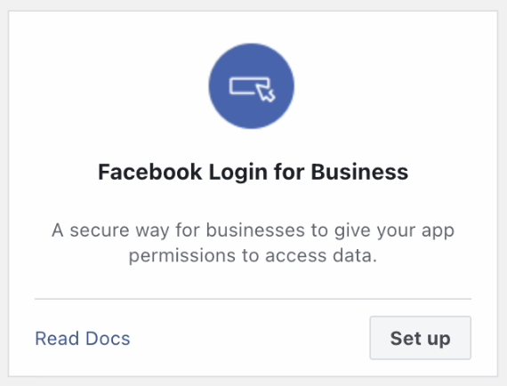
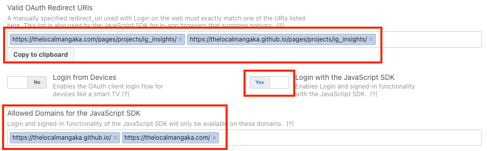

While I initially wanted to make this tool available to anybody who could simply login to Facebook on my website, I can not publicly use Facebook's APIs on other people's accounts without undergoing business verification (and I do not own a business).
And so instead, I'm allowing my page to be run with any Facebook Developer Application ID, where anybody can make an application, then use my page to run their own application and access their own account data.
NOTE: I only want my page to be used by unpublished Facebook Developer applications, for users to view their own personal data. I do NOT want anybody using my website in applications that they intend to publish for public use.
Having said that, here are all the steps you need to follow to create a Facebook Developer Application that can be used on this page:
Once you are logged in, click on "My Apps" in the upper right hand corner:
On the following page, click on "Create App" in the upper right hand corner.
On the following page, select "I don't want to connect a business portfolio yet". (Your selection in this step doesn't actually matter)
Then click "Next".
On the following page, select "Other".
Then click "Next".
On the following page, select "Business" for your app type.
The Insights APIs are meant to be used on Instagram "Business" entities, while a "Business"-type application is meant to manage these entities--and so only these types of applications can be granted permissions to use the Insights APIs.
Then click "Next".
On the following page, input any name for your application
Then click on "Create app".
In the dashboard that opens up, you will be presented with possible products you can add to your app.
Scroll down and look for "Facebook Login for Business".
Click on "Set up".

This will result in "Facebook Login for Business" being added to the left sidebar.
Click on it, and select "Settings" beneath.
Scroll down and look for "Valid OAuth Redirect URIs":
Enter "https://thelocalmangaka.github.io/pages/projects/ig_insights/index.html" into this field.
This allows Facebook to redirect back to my page after you login.
Below this you will see "Login with the JavaScript SDK":
Toggle this field to "Yes".
This allows the code for Facebook Login with your application ID to work on my page.
Below this you will see "Allowed Domains for the JavaScript SDK":
Enter "https://thelocalmangaka.github.io/" into this field.
Click on "Save changes".

In the left sidebar, click on "App Settings".
Click on "Basic" beneath it.
Look for the "Privacy Policy URL" field.
Enter "https://thelocalmangaka.github.io/pages/projects/ig_insights/privacy_policy.html" into this field.
Look for the "Terms of Service URL" field.
Enter "https://thelocalmangaka.github.io/pages/projects/ig_insights/terms_and_conditions.html" into this field.
Click on "Save changes".
The purpose of these steps is that they are necessary fields to enter to enable this app to go "live".
By "live", it just means the ability to use this application to access your own account data.
If you ever undergo business verification and actually publish this application for public use, a privacy policy and terms of service will be needed for legal purposes, but this tutorial and page are not intended for actually publishing your application for public use and I strictly do not want anybody utilizing my website for such purposes.
In the upper menu bar, look for "App Mode".
Toggle this button from "Development" to "Live".
Congratulations! You have completed all the steps necessary to use my page!
Return to the project page, and copy/paste in your now functional Application ID!